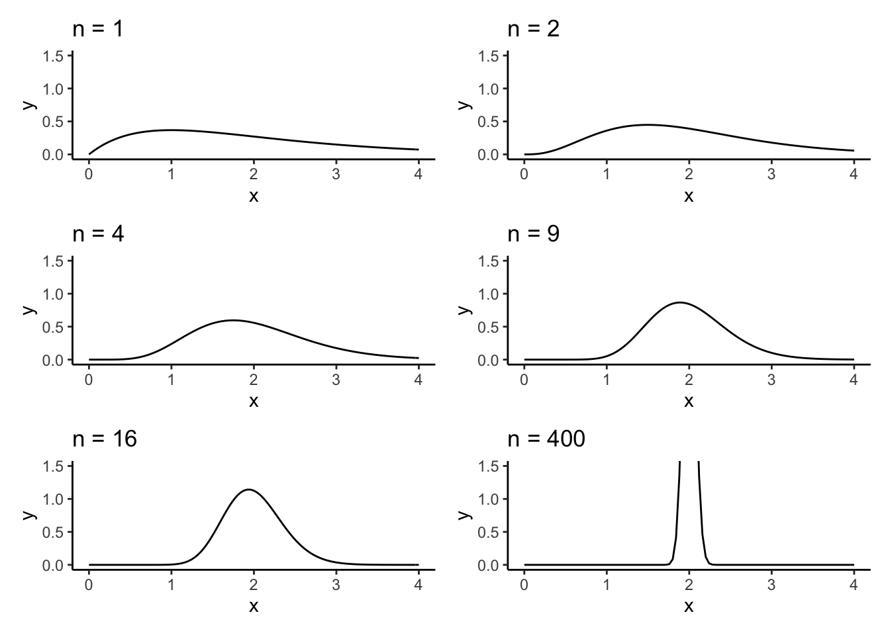
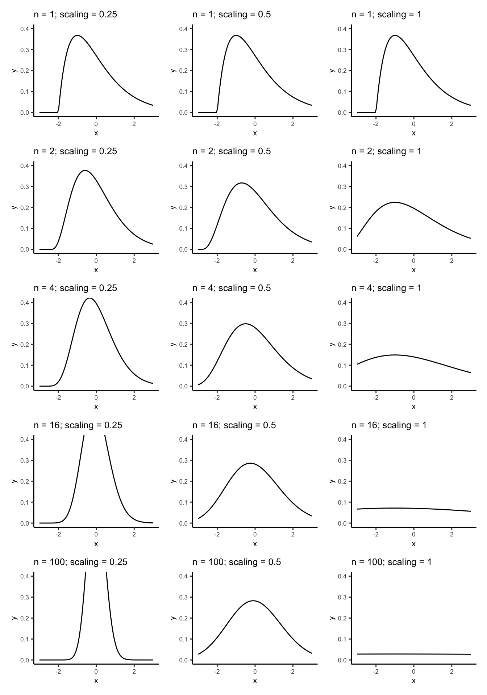

Chapter 3 Supplement to Chapters 13 and 14
This chapter implements much of the analysis shown in chapters 13 and 14 of A Modern Introduction to Probability and Statistics. R code is given for the simple textbook datasets used in the book, and then the concepts are illustrated on real data.
All datasets from the book can be downloaded here: https://www.tudelft.nl/en/eemcs/the-faculty/departments/applied-mathematics/applied-probability/education/mips/.
3.1 Law of Large Numbers (Chapter 13)
Load the packages we need:
To simulate from a \(\text{Gamma}(\alpha,\beta)\) distribution in , use the
rgamma function:
# Simulate from a gamma
# Type ?rgamma to get information on the parametrization
# There are three named parameters: shape, scale, and rate. Rate = 1/scale.
# The distribution has mean shape * scale, or shape / rate.
# The parametrization in the book is the "rate" parametrization.
# Always read the docs to understand what the parameters are.
#
# Simulate with shape = 2 and rate = 1, so mean = 2 and variance = ? (exercise)
rgamma(1,shape = 2,rate = 1)## [1] 1.098434## [1] 2.626998 1.909652 1.705163 1.844181 2.188379 1.399287 2.037387
## [8] 1.895074 0.456624 6.573491Plot the density of the gamma sample mean for various \(n\), recreating the left side of Figure 13.1:
# Define a function to compute the density
# Fix the scale and shape arguments at defaults of what's used in the book
# You can play around with these.
gamma_samplemean_density <- function(x,n,shape = 2,rate = 1) {
# x: point to evaluate the density at
# n: sample size
# Just use the dgamma function
dgamma(x,shape = n * shape,rate = n*rate)
}
# Plot it for various n
# Define a function to make the plot
plot_for_n <- function(n) {
# Create a function with the n argument fixed
densfun <- purrr::partial(gamma_samplemean_density,n = n)
# Plot using ggplot
tibble(x = c(0,4)) %>%
ggplot(aes(x = x)) +
theme_classic() +
stat_function(fun = densfun) +
coord_cartesian(xlim = c(0,4),ylim = c(0,1.5)) +
labs(title = stringr::str_c("n = ",n))
}
# Create the plots
purrr::map(c(1,2,4,9,16,400),plot_for_n) %>%
cowplot::plot_grid(plotlist = .,nrow = 3)
Simulate the running average of experiments of size \(n\) from a \(\text{Gamma}(2,1)\) for \(n = 1,\ldots,500\) and plot them, recreating Figure 13.2:
set.seed(54768798) # So I can reproduce these results
# Simulate one experiment of size 500
n <- 500
alpha <- 2
beta <- 1
gamma_experiment <- rgamma(n = n,shape = alpha,rate = beta)
# Compute the running average- a vector where the nth component is the average
# of the first n terms in gamma_experiment
runningaverage <- cumsum(gamma_experiment) / 1:length(gamma_experiment)
# Plot, remembering that the true mean is 2 / 1 = 2
tibble(x = 1:length(runningaverage),
y = runningaverage) %>%
ggplot(aes(x = x,y = y)) +
theme_classic() +
geom_point(pch = ".") +
geom_hline(yintercept = alpha / beta,colour = "red",size = .5,linetype = "dotted")
What happens when you increase the number? Try it for \(n = 1,000, n = 10,000\), and so on.
Now try this for the Cauchy distribution, the left panel of Figure 13.3:
set.seed(4235) # So I can reproduce these results
# Simulate one experiment of size 500
n <- 500
mu <- 2
sigma <- 1
cauchy_experiment <- rcauchy(n = n,location = mu,scale = sigma)
# Compute the running average- a vector where the nth component is the average
# of the first n terms in gamma_experiment
runningaverage <- cumsum(cauchy_experiment) / 1:length(cauchy_experiment)
# Plot, remembering that the true mean is 2 / 1 = 2
tibble(x = 1:length(runningaverage),
y = runningaverage) %>%
ggplot(aes(x = x,y = y)) +
theme_classic() +
geom_point(pch = ".") +
geom_hline(yintercept = alpha / beta,colour = "red",size = .5,linetype = "dotted")
Yikes! The Cauchy distribution is the worst.
Exercise: repeat this for the Pareto distribution, recreating the right panel
of Figure 13.3. You can simulate from the Pareto distribution using the rpareto
function in the actuar package. Type install.packages("actuar") and then
actuar::rpareto. Type ?actuar::rpareto to get help on using this function.
Figuring out how to use the function is part of the exercise.
3.1.1 Extended example: the probability of heads
As an extended example, consider trying to figure out what the probability of heads is for a fair coin, just based on flipping the coin a bunch of times. We can use the material of Section 13.4 to address this challenge.
Let \(X\) be a random variable which takes values \(0\) and \(1\) if the coin comes up tails or heads on any given flip. Let \(C = \left\{ 1\right\}\), so the specific event that we are interested in is whether the coin comes up heads on any given flip. \(p = \text{P}(X\in C)\) is hence the probability of heads.
To estimate \(p\) using the LLN, we will take a coin which has probability \(p\) of coming up heads and flip it a bunch of times and calculate the proportion of flips that come up heads.
# Function to flip the coin n times, and return a sequence of 1 if heads and 0 if tails
# for each flip.
# Use the rbinom function to simulate from a bernoulli/binomial distribution.
flip_the_coin <- function(n,p) {
# n: number of times to flip the coin.
# p: probability of heads
# Returns a vector of length n containing the results of each flip.
rbinom(n,1,p)
}
# Function to flip the coin n times and compute the
# sample proportion of heads
sample_proportion_of_heads <- function(n,p) {
# Returns a number representing the sample proportion of heads
# in n flips
mean(flip_the_coin(n,p))
}
# Try it out:
sample_proportion_of_heads(10,.5)## [1] 0.4Exercise: create a plot of the running average of sample proportions of heads, similar to the above plots for the Gamma and Cauchy (Figure 13.3). How many times do you think you need to flip the coin before the result is an accurate estimate? Does this change for different values of \(p\)?
3.2 Central Limit Theorem (Chapter 14)
Let’s investigate the scaling power on \(n\) when standardizing averages. The book shows in Figure 14.1 that multiplying \((\bar{X} - \mu)\) by \(n^{1/4}\) isn’t enough to stabilize the variance in the distribution, \(n^{1}\) is too much, and \(n^{1/2}\) is just right.
Exercise: derive the probability density of \(Y = n^{p}(\bar{X} - \mu)\) when \(X_{1},\ldots,X_{n}\overset{iid}{\sim}\text{Gamma}(2,1)\). Hint: look at the code below. How do I compute this? What formula am I using?
We can recreate Figure 14.1 as follows:
scalingdensity <- function(y,n,p) {
dgamma(
x = y*n^(-p) + 2,
shape = 2 * n,
rate = n
) * n^(-p)
}
plotscalingdensity <- function(n,p) {
dens <- purrr::partial(scalingdensity,n = n,p = p)
tibble(x = c(-3,3)) %>%
ggplot(aes(x = x)) +
theme_classic() +
stat_function(fun = dens) +
coord_cartesian(xlim = c(-3,3),ylim = c(0,.4)) +
labs(title = stringr::str_c("n = ",n,"; scaling = ",p)) +
theme(text = element_text(size = 8))
}
# Plot them all! This code is somewhat advanced; you should run it
# line by line and figure out what each step does. It's a pretty concise
# way of doing a lot of operations. This type of "list comprehension" is fundamental
# to learning to program with data.
pltlist <- expand.grid(n = c(1,2,4,16,100),
p = c(1/4,1/2,1)) %>%
dplyr::arrange(n,p) %>%
as.list() %>%
purrr::transpose() %>%
purrr::map(~plotscalingdensity(n = .x[["n"]],p = .x[["p"]]))
cowplot::plot_grid(plotlist = pltlist,
nrow = 5,ncol = 3)
You can play around with different scaling values and sample sizes.
Figure 14.2 is like the centre column of Figure 14.1 with a normal density curve overlayed.
Exercise: recreate the left column of Figure 14.2 by doing the following:
- Replace
expand.grid(n = c(1,2,4,16,100),p = c(1/4,1/2,1))byexpand.grid(n = c(1,2,4,16,100),p = c(1/2))in the above code that generates the plots (and set the values ofnrowandncolappropriately as well). - Add a normal density line. You have to modify the
plotscalingdensity. Add a layer as follows:stat_function(fun = dnorm,linetype = "dotted").
We can compute probabilities involving the standard normal distribution function
in R using the pnorm function. Let’s compute the approximate probability
described in a couple of the textbook’s examples, and compare it to simulated
and true values.
# "Did we have bad luck?".
# The actual probability is (why?):
n <- 500
1 - pgamma(2.06,shape = 2*n,rate = 1*n)## [1] 0.1710881## [1] 0.1710561# Why are we doing 1 - pnorm()? pnorm() gives P(X < x) for X ~ N(0,1)
# To get P(X > x), you can do
pnorm(.95,lower.tail = FALSE)## [1] 0.1710561# but it's easier to just do P(X > x) = 1 - P(X < x)
# We can also simulate this probability by generating a bunch of gamma random
# samples and seeing how often their averages are > 2.06:
N <- 10000
exceeded <- numeric(N)
for (i in 1:N) {
samp <- rgamma(n,shape = 2,rate = 1)
mn <- mean(samp)
exceeded[i] <- as.numeric(mn > 2.06)
}
mean(exceeded)## [1] 0.1714# Pretty good. Can you experiment with the number of simulations? How
# many experiments do you need to simulate in order to get an accurate value?3.2.1 Extended example: the probability of heads
In our coin example from the LLN section, we investigated how many flips were needed to get an average number of heads that was close (in probability) to the true probability of heads. Using the CLT, we can get a probabilistic quantification of the error rate– how far away from the truth the proportion of heads is likely to be.
Similar to the LLN experiment, we’re goin to flip the coin a bunch of times and calculate the sample proportion of heads; then we’re going to do that a bunch of times and plot a histogram of the sample proportions. The CLT tells us that as long as each experiment has enough flips, the resulting probability density of the sample proportion of heads should be approximately Normal.
N <- 1000 # Number of experiments to do
n <- 100 # Number of times to flip the coin in each experiment
p <- .5 # True probability of heads
experiments <- numeric(N)
for (i in 1:N) {
experiments[i] <- sample_proportion_of_heads(n,p)
}
# Plot them
tibble(x = experiments) %>%
ggplot(aes(x = x)) +
theme_classic() +
geom_histogram(aes(y = ..density..),bins=30,colour="black",fill="orange",alpha = .5) +
stat_function(fun = dnorm,args = list(mean = p,sd = sqrt(p*(1-p)/n)),colour = "purple") +
labs(title = "Empirical distribution of sample proportions of heads",
subtitle = stringr::str_c("# of flips: ",n,", true probability of heads: ",p),
x = "Proportion of heads",
y = "Empirical Density") +
scale_x_continuous(breaks = seq(0,1,by=.1))
Exercises: 1. Recreate the above plot with \(n = 10, 50, 100, 1000\) and \(p = .4, .2, .8, .01, .99\). What do you see? Is the accuracy of the normal approximation to this distribution affected by \(n\) or \(p\)? 1. What are the mean and variance of the distribution of sample proportions of heads? (Hint: what are the mean and variance of a \(\text{Binom}(n,p)\) random variable?) 1. Recreate the above plot, but scale the sample proportion of heads appropriately such that it has mean \(0\) and variance \(1\). 1. Recreate the “Normal Approximation of the Binomial Distribution” calculations using
- The CLT
- The exact values, using the
rbinomfunction (look up the help file) - A simulation